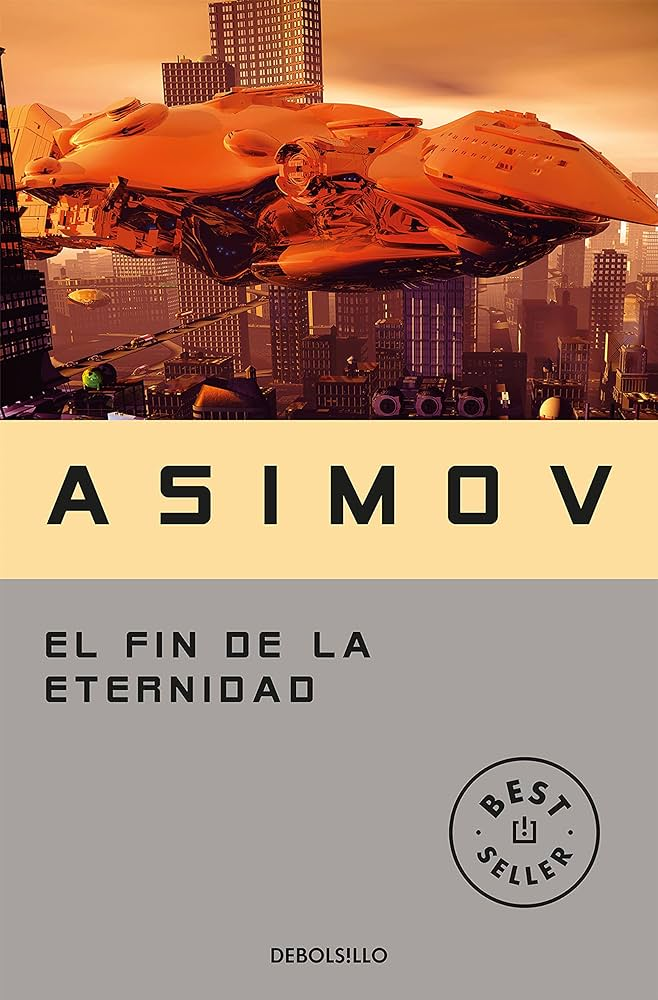

Dune
Género: Ciencia Ficción
Autor: Isaac Asimov
Año de publicación: 1955
Link de compra: AMAZON
Género: Ciencia Ficción
Autor: Isaac Asimov
Año de publicación: 1955
Link de compra: AMAZON
En el clásico atemporal "El fin de la eternidad" de Isaac Asimov, la exploración de la manipulación temporal se convierte en una travesía fascinante que desafía las leyes del universo conocido. La trama sigue a Andrew Harlan, un hábil Manipulador Temporal en la organización secreta conocida como la Eternidad, encargada de alterar el curso de la historia para asegurar un futuro "mejor".
Asimov, maestro de la ciencia ficción, teje una narrativa compleja que se sumerge en las paradojas temporales y la ética de jugar con el flujo temporal. La Eternidad, una entidad fuera del tiempo, actúa como el árbitro del destino humano, pero a medida que Harlan profundiza en sus responsabilidades, cuestiona las consecuencias de sus acciones.
"El fin de la eternidad" no solo es una exploración de conceptos científicos, sino una meditación sobre el papel del individuo en el tejido del tiempo. Asimov, con su estilo claro y visionario, anticipa dilemas éticos que siguen siendo relevantes en la era moderna de la ciencia y la tecnología.
La obra destaca por su capacidad para mezclar la sofisticación de las ideas con la accesibilidad narrativa, llevando a los lectores a través de un viaje que desafía las percepciones convencionales del tiempo y la realidad. Asimov, con su genialidad literaria, crea una pieza que trasciende su época y se mantiene como un faro intelectual en la vastedad del género de la ciencia ficción.